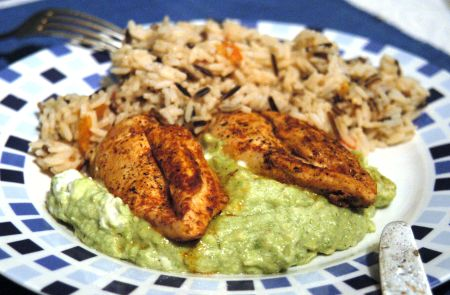

| Zutaten für 4 Personen: | |
| 500 g | Pouletbrüstchen |
| 2 EL | Butter oder Margarine |
| 1 dl | Bouillon |
| Salz, Pfeffer, | |
| Paprika | |
| 1 | Zitrone |
| 1 dl | Rahm |
| 3 | reife Avocados |
| Tabasco | |
| Schlagrahm | |
| wilder Reis | |
| 2 | Tomaten |
| Kerbel oder Petersilie | |
Die Pouletbrüstchen mit Salz, weissem Pfeffer und Paprika zart würzen und in der zerlassenen Butter ca. 10 Minuten braten.
Mit Bouillon ablöschen, zugedeckt 15 - 20 Minuten schmoren lassen.
Die Zitrone auspressen, den Saft für das Avocadopürée bereithalten. 2 Avocados halbieren, das Fleisch herauslösen und mit Gabel zerdrücken. Mit Zitronensaft, Salz und Pfeffer und auch vorsichtig mit Tabasco würzen.
Rahm steif schlagen und darunter ziehen.
Die Pouletteile auf vorgewärmter Platte und mit vorgewärmter Avocadomouse umgeben anrichten.
Die dritte Avocado schälen, in feine Schnitze schneiden. Dekorativ zwischen den Pouletteilen platzieren. Sofort servieren.
Die Tomaten übers Kreuz einschneiden, kurz in siedendes Wasser tauchen, schälen, halbieren, entkernen. Fruchtfleisch in 1 cm grosse Würfel schneiden,
Den Reis nach Anleitung auf der Packung zubereiten. Die Tomatenwürfel zum Reis geben und durchwärmen. Mit Kerbel oder feinen Petersilienzweiglein garnieren.
Herbert Eigenmann, Code: PAW
Gelang am 24.3.2005 ganz hervorragend mit Rodney, Ines und Anthony. RE.
@LINKBACK_TAG@ @WAKELOCK@